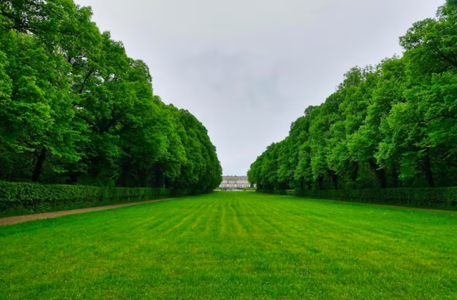
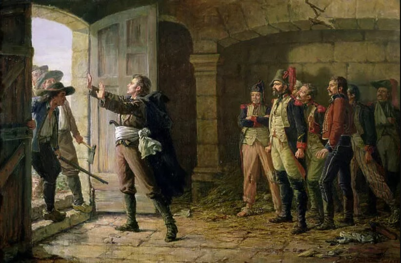
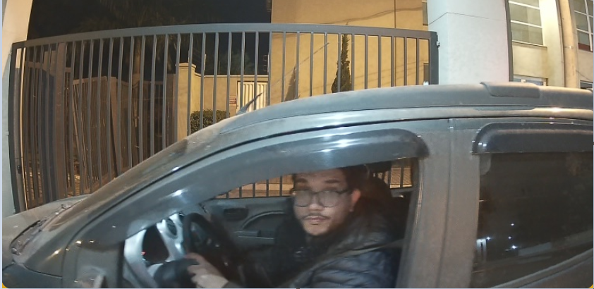

Sobre mim
Olá reservei este espaço para falar um pouquinho sobre mim.
Então, nunca é fácil falarmos de nós mesmos, mas partindo do principio eu sou nascido e criado na cidade de Cosmópolis - São Paulo. Meu estado civil é casado, momento muito importante de minha vida aliás, que me trouxe muitos amadurecimentos e me impulsiona sempre a me aprimorar pessoalmente. Ainda não possuímos filhos, porém esperamos ter 'alguns' filhos no futuro se assim Deus permitir. Hoje moramos só nós dois, meu pai mora em Minas e minha querida mãe já veio a falecer. Sobre meus hobbies preferidos estão passear ao ar livre, em lugares bem arborizados ou grandes e longos campos, assistir filmes, épicos como o 'Senhor dos anéis', ler alguns livros épicos, novamente como o: 'Senhor dos anéis'. (risos). E para não dizer sobre dirigir, já foi uma atividade relaxante e empolgante para mim, hoje nem tanto. Assim como todo ser humano aprendemos a gostar de boas e novas coisas. Também gosto de vários conteúdos relacionado a informática.
Então nada mais justo do que dizer um pouco sobre o lado profissional. Tudo começa com anseios que temos de melhorar de vida, inicialmente nada especial, comecei fazendo Bacharel em quimica, porém logo descobri que não era aquilo que preenchia, e as vezes mais do que dinheiro necessitamos de algo a mais. E foi aí que entrei na área de Engenharia de Software, e desde então não olhei para trás.
Uma foto sobre meu casamento:

Campo:
Andar pelo campo, ouvir a natureza e sentir a brisa tranquila trás paz para o coração.

E uma atividade que eu gosto muito também é estudar história.

A imagem acima de Maurice d'Elbée, realista francês, que teve grande participação na revolta da Vendeia, inicialmente entusiasmado com as ideias revolucionárias, logo se decepciona vendo os abusos e contrariedades do que era defendido pelos republicanos, assim lutou e defendeu realistas e a igreja católica até o fim de sua vida. D'Elbeé é famoso por suas ações após a Batalha de Chemillé, em 11 de abril de 1793: após a vitória dos insurgentes, muitos deles planejavam vingar seus mortos e executar os prisioneiros republicanos (aproximadamente 400). D'Elbée tentou impedi-los e, por fim, pediu-lhes que recitassem o Pai Nosso, o que o fizeram; quando chegaram à frase "Perdoai as nossas ofensas, assim como nós perdoamos a quem nos tem ofendido", D'Elbeé interrompeu-os com as palavras: "Não mintais a Deus!". Comovidos com tal reprova, seus homens se afastaram e d'Elbée conseguiu salvar os prisioneiros. Esse episódio ficaria conhecido como " Le Pater d'Elbée " (o Pai Nosso d'Elbée).
Dirigindo um pouquinho:

Busque o que vale a pena e te preencha! 😀